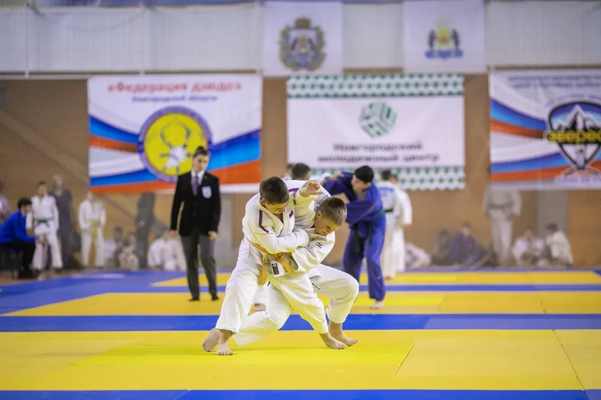
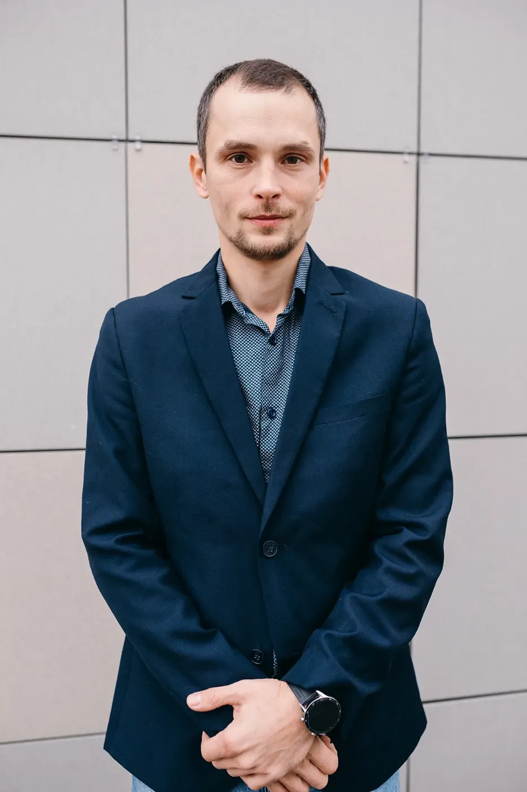
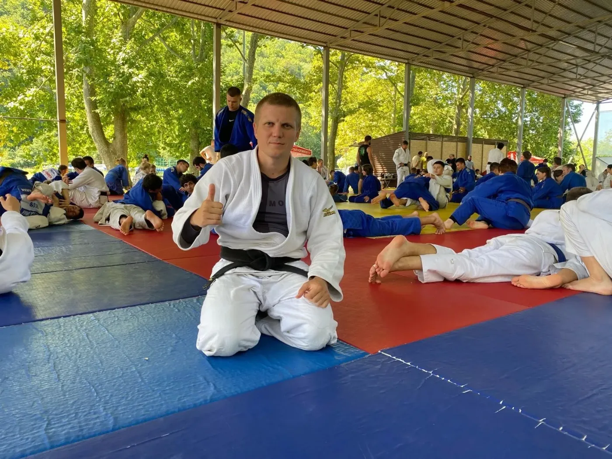
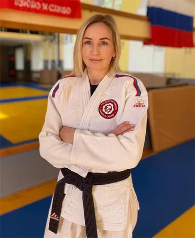
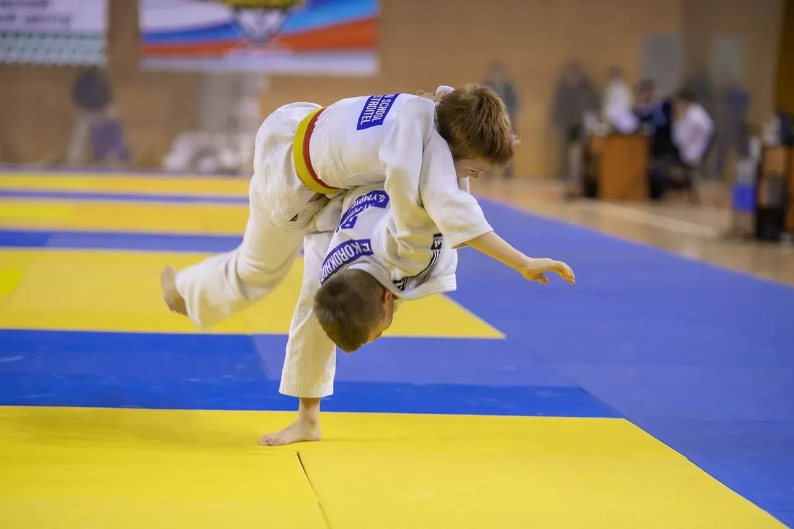
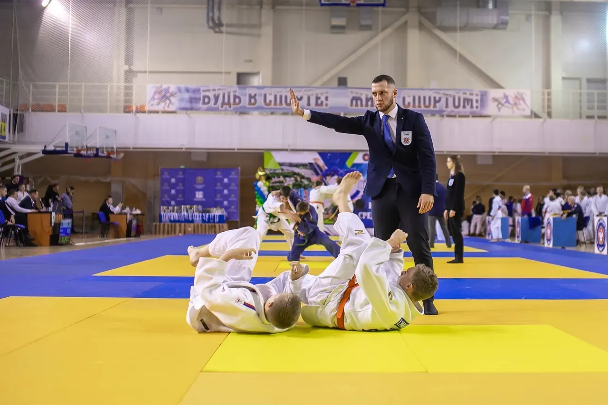
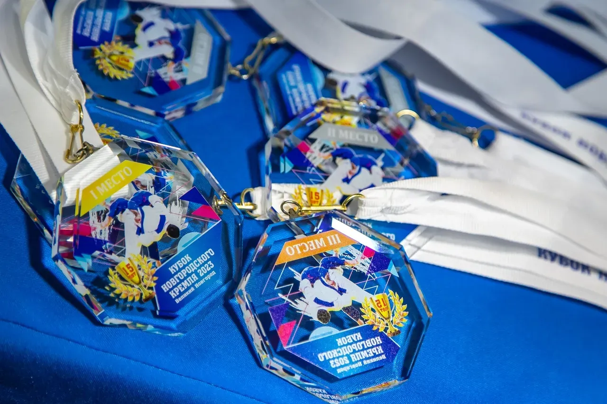
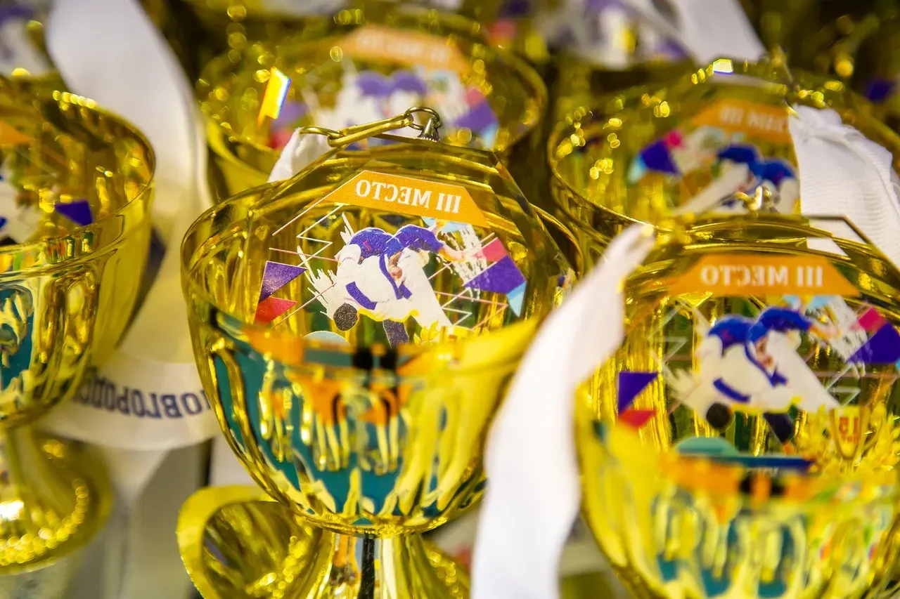
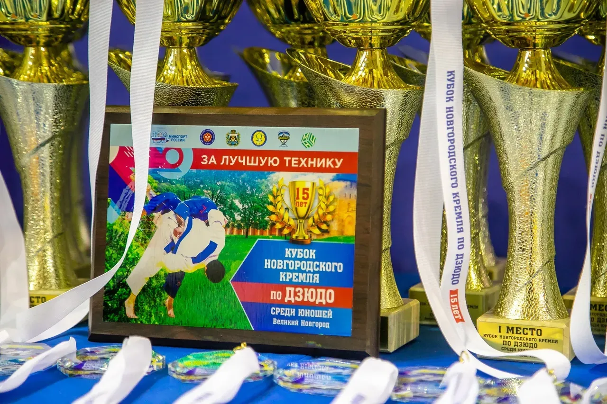

Новгородской области

Соревнования, аттестации, подготовка тренеров и судей. Календарь сезона, положения и протоколы — здесь. Тренировки — в клубах федерации.
Календарный план федерации на год. Положения и регламенты — в разделе «Документы» за месяц до старта.
Все соревнования и архивФедерация не проводит тренировки. Занятия ведут клубы, с которыми у федерации договор: выберите клуб и свяжитесь с тренером напрямую.
Объединяет тренеров федерации, проводит тренировки по дзюдо и самбо для детей и взрослых.
Аттестованные тренеры федерации. Тренируют в клубах федерации.



Федерация дзюдо Новгородской области с 2013 года развивает дзюдо в регионе: проводит соревнования и аттестации, готовит тренеров и судей, организует сборы и лагеря для юных дзюдоистов.




